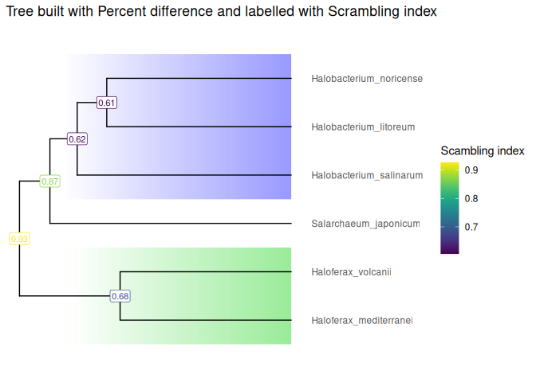

Produce, plot and use phylogenetic trees to study genome scrambling.
Installation
As of today there is no release. Install the development version of ScrambledTreeBuilder from GitHub with:
Usage
The input of ScrambledTreeBuilder is YAML files produced by the oist/plessy_nf_GenomicBreaks pipeline from all-versus-all pairwise genome alignments computed with the (nf-core/pairgenomealign)[https://nf-co.re/pairgenomealign] pipeline. This package includes a few YAML files in its example data, and example objects derived from these files to compute and plot trees. Here is an example of tree produced by ScrambledTreeBuilder. See the Get started vignette for details.
library(ScrambledTreeBuilder)
#> Loading required package: S7
visualizeTree(Halo_Tree, "Scrambling_index") +
Halo_FocalClades +
ggplot2::ggtitle(paste("Tree built with Percent difference and labelled with Scrambling index")) +
viridis::scale_color_viridis(name = "Scambling index")